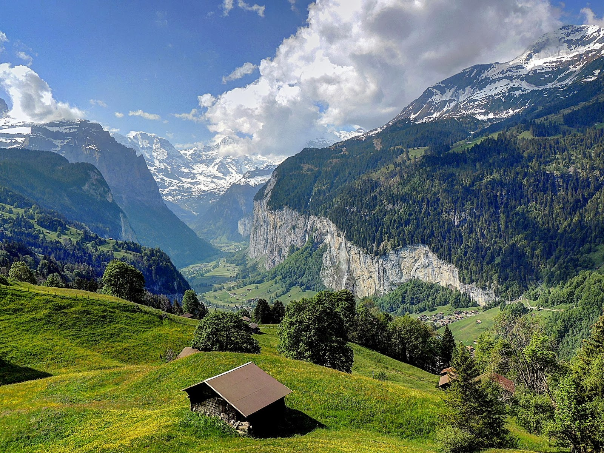
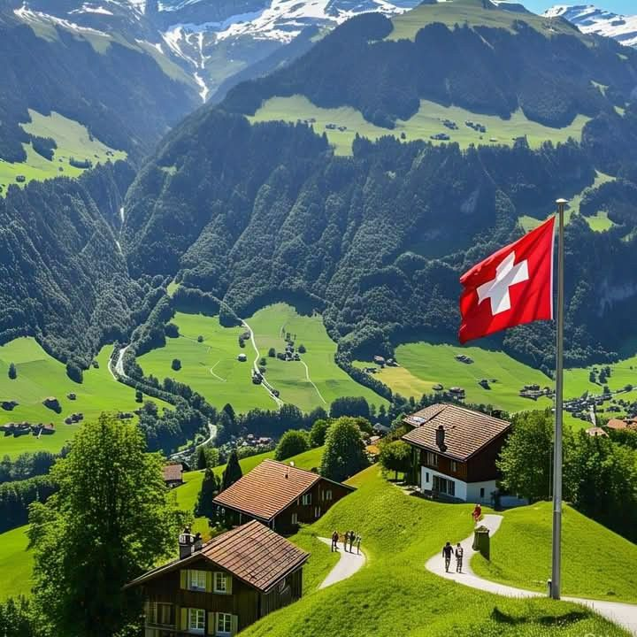

Suiza es uno de los países más hermosos y organizados del mundo. Se encuentra en Europa y es famosa por sus impresionantes montañas, lagos cristalinos, ciudades modernas y su increíble calidad de vida. Además, Suiza es reconocida mundialmente por sus chocolates, relojes, quesos y paisajes naturales que parecen sacados de una película. Este país combina naturaleza, cultura y tecnología de una manera única.
Suiza es un país lleno de historia, belleza natural y tradiciones. Sus enormes montañas cubiertas de nieve atraen a millones de turistas cada año. Muchas personas visitan Suiza para practicar esquí, senderismo y disfrutar de los increíbles paisajes de los Alpes Suizos.
También es uno de los países más seguros del mundo y cuenta con ciudades modernas como Zúrich, Ginebra y Berna. Los trenes suizos son famosos por ser rápidos y puntuales, permitiendo recorrer el país mientras se observan paisajes espectaculares llenos de lagos, bosques y montañas.
La cultura suiza es muy interesante porque mezcla influencias alemanas, francesas e italianas. Además, sus habitantes valoran mucho la limpieza, el respeto y la puntualidad. Suiza también es reconocida internacionalmente por producir algunos de los mejores chocolates y relojes del planeta.

